Withdrawal form — mandatory for German online shops since 19 June 2026 (§ 356a BGB)
The statutory withdrawal form. Self-hosted, neutral, yours.
Revoco is an open-source electronic withdrawal form for a single merchant: a consumer submits a withdrawal declaration, the system stores it and sends the legally required acknowledgment — while all data stays on your own server.
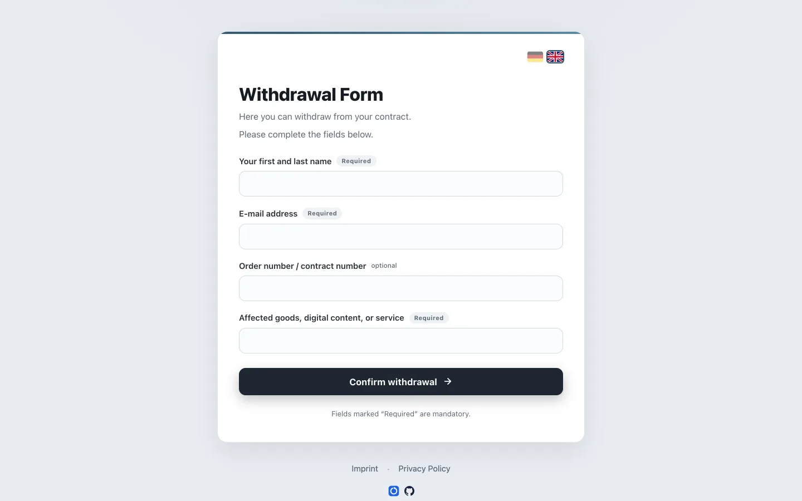
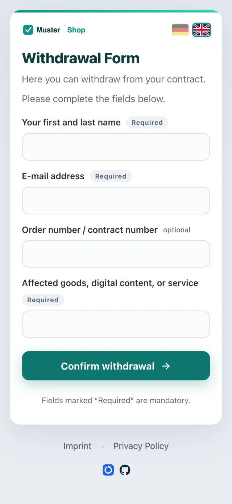
The withdrawal form is now a legal duty
Since 19 June 2026 — with no transition period — online shops offering consumers a statutory right of withdrawal must provide an electronic withdrawal form: one the consumer can use without logging in, answered by a confirmation on a durable medium. The legal basis is § 356a BGB, transposing EU Directive 2023/2673.
-
A withdrawal button in your shop
A constantly available, prominently placed button — "Withdraw from contract" — on your site. It links straight to your Revoco form; integrating the button is the only change your shop needs.
-
The electronic withdrawal form
The consumer states name, contract identification and e-mail address — exactly the data the law allows to be required, and nothing more — and confirms the withdrawal. Revoco is this form.
-
The acknowledgment e-mail
Immediately after submission the consumer receives a receipt acknowledgment on a durable medium, with the content of the declaration plus date and time. Ad-free, as the law demands.
- Only the three legally permitted mandatory fields — name, contract identification, e-mail. Nothing else is required.
- The submit is never blocked: no captcha, no order-number gate. Spam signals only classify — every declaration is stored.
- Acknowledgment e-mail with declaration content, date and time in the consumer's local time — sent asynchronously, so a mail-server hiccup never breaks the submit.
- Every declaration is stored immutably, giving you the proof of receipt the law expects you to keep.
Revoco is software, not legal advice. Whether and how § 356a BGB applies to your shop is a question for your legal counsel.
Compliance without a compliance vendor
Revoco is deliberately small: one merchant, one container stack, one job done well.
Built for the legal withdrawal flow
The full statutory flow per § 356a BGB: form → submission → success page → acknowledgment e-mail. Three mandatory fields, never-block submission, immutable records.
Self-hosted, full data sovereignty
You run it, you own it. Withdrawal data lives in a SQLite file on your volume — no SaaS, no third-party processors, and you remain the data controller.
Neutral by default, brandable per deploy
Ships with a clean neutral design. A single CSS token contract (--wf-*) turns it into your shop's look — logo, colours and brand name are configuration, not a fork.
Open source (AGPL-3.0)
The entire codebase is public and auditable. Fork it, review it, extend it — the AGPL keeps improvements open for everyone.
One-command Docker deploy
Published images on GHCR, a generic docker-compose.yml, env-driven configuration. Runs behind any reverse proxy; fails fast when misconfigured.
German and English, switchable
The consumer form ships in German and English with an in-form language switcher; the operator panel speaks English by default. More languages are a lang file away.
A look at the product
All screenshots show fictitious demo data — the invented "Muster Shop" brand and test personas. No real merchants or customers appear.
Neutral by default — your brand on demand
The same deployment, two looks: the out-of-the-box neutral theme, and a deploy-time brand overlay with the merchant's colours, logo and name.
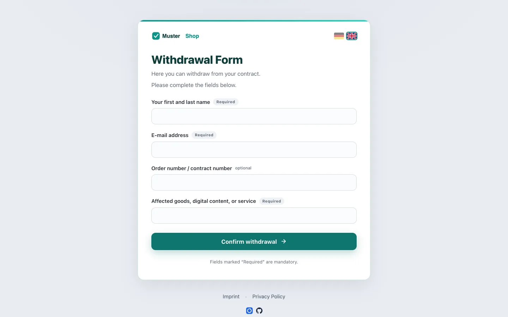
--wf-* theme overlay, logo and brand name via configurationA consumer flow that cannot dead-end
Clear inline validation, and a confirmation page the moment the declaration is submitted. The acknowledgment e-mail follows asynchronously.
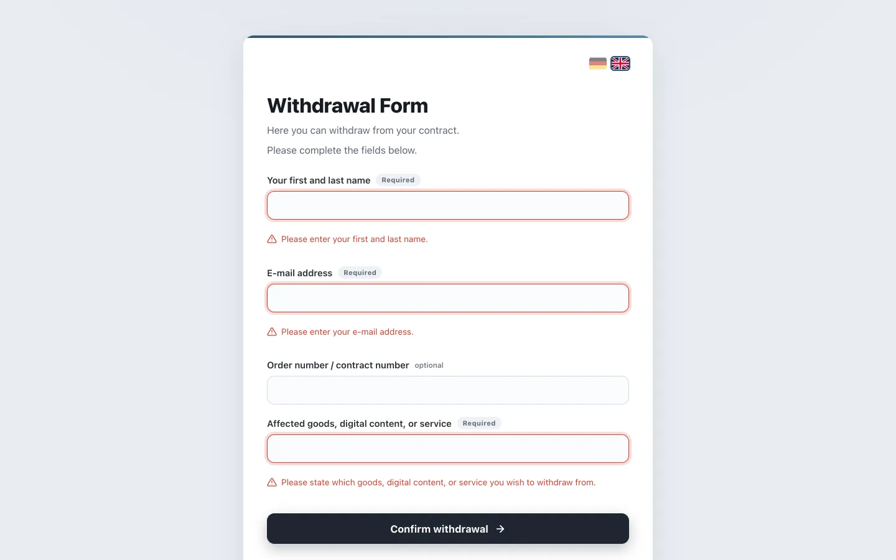
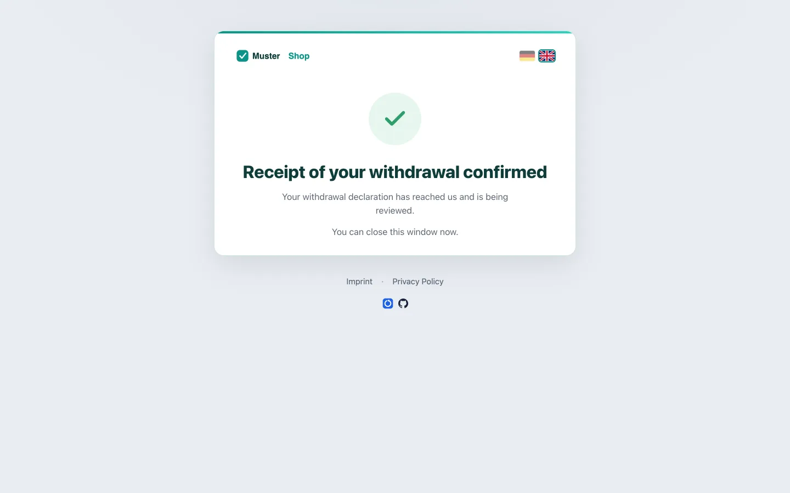
An operator panel that stays out of your way
Incoming withdrawals in one list with search and spam signals, a detail view with a single "handled" toggle, and settings for languages, legal pages and withdrawal scope. A setup banner tells fresh installs exactly what is still missing.
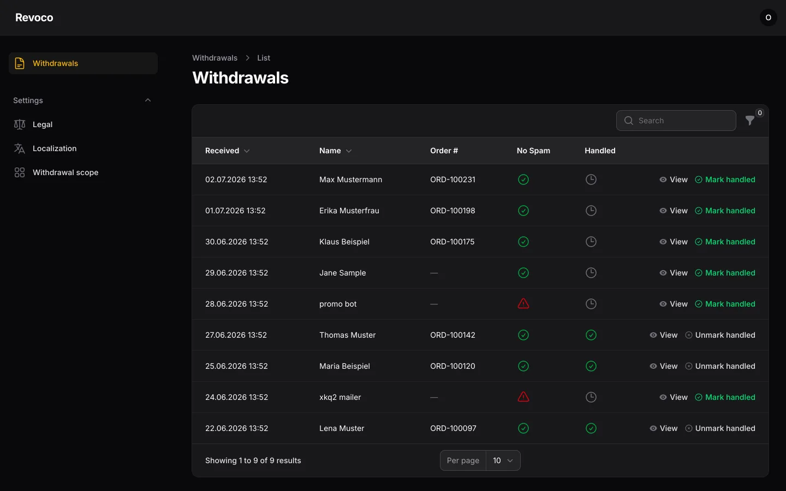
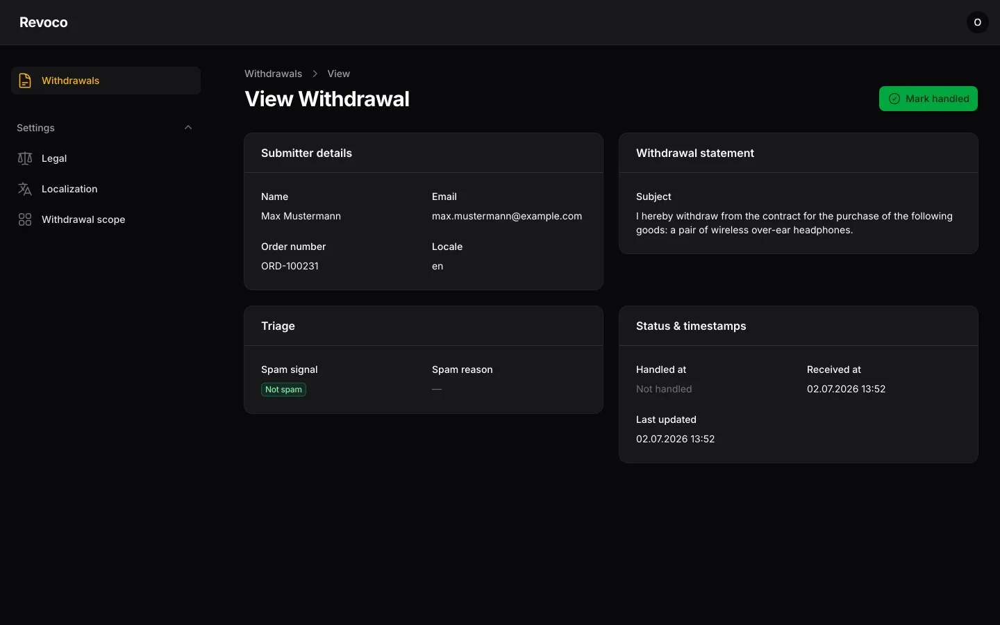
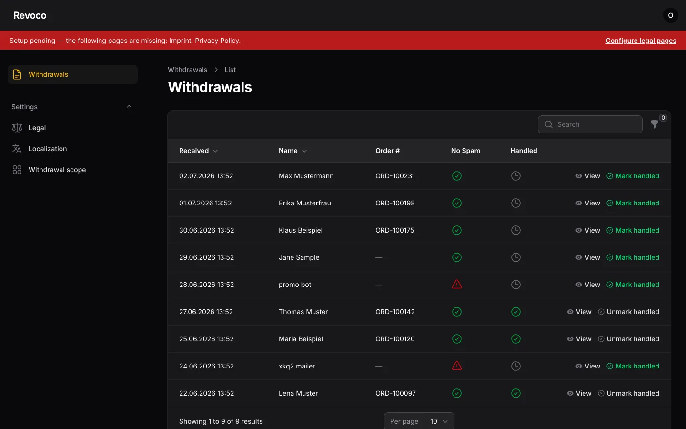
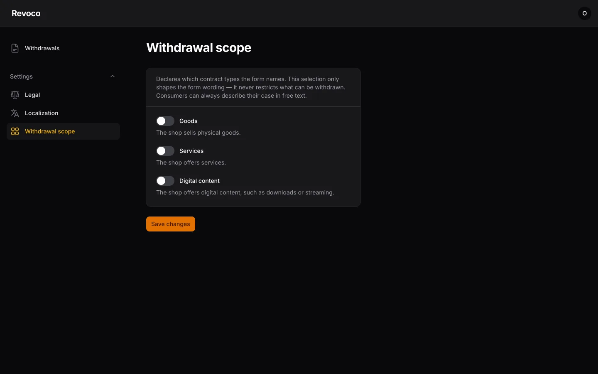
Legal pages included
Imprint and privacy-policy pages ship with the form, edited in the panel — multilingual, with per-language fallbacks. Or keep linking to your existing pages instead.
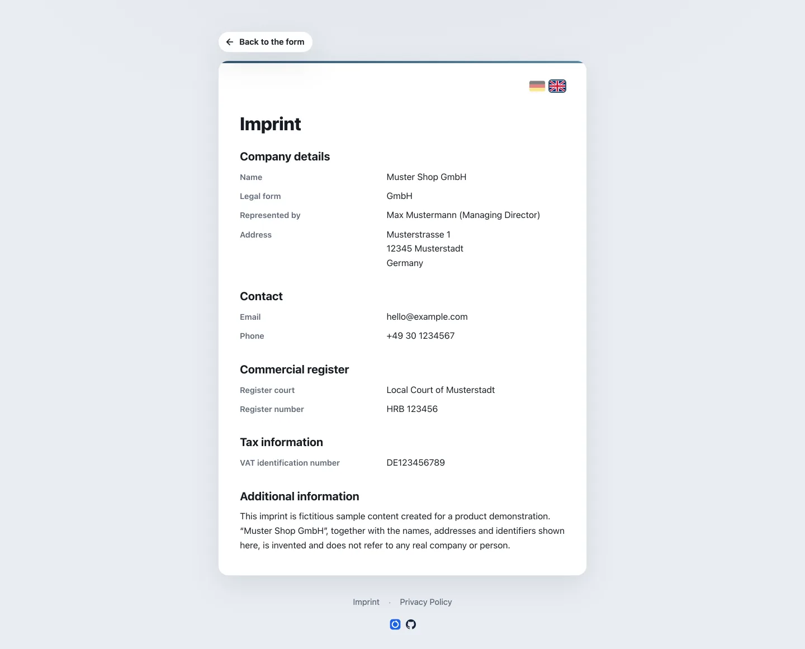
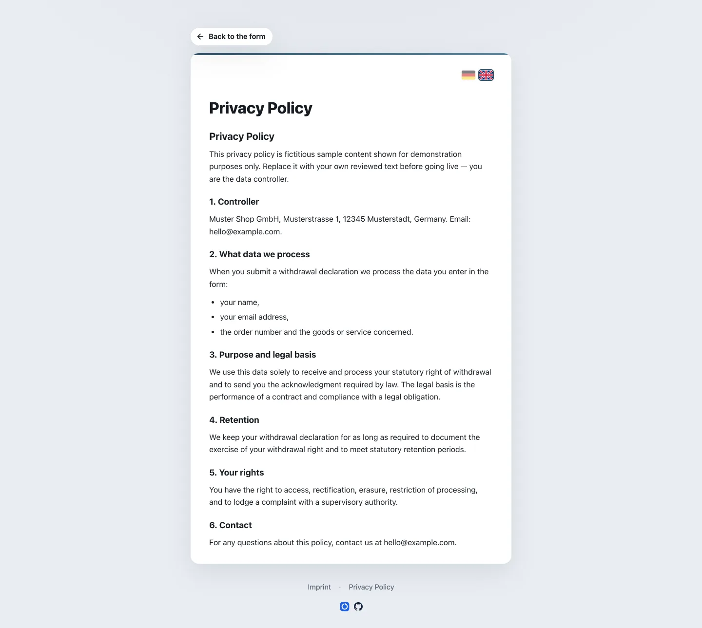
Know the moment a withdrawal arrives
Withdrawal declarations are rare events with legal deadlines attached — exactly the kind of thing you want pushed to your phone, not buried in an inbox. Revoco can notify you through ntfy: instant push to your phone or desktop the moment a declaration lands.
- Data-minimal by design — the push carries no personal data, just the event.
- Self-hostable like everything else: a ready-made ntfy service ships as an optional compose profile.
- Optional and decoupled — one
.envtoggle, and a push failure never affects the consumer's submission.
From bare install to branded and filled — in one session
Revoco ships two deploy-time authoring skills for Claude Code and other AI models. They do the two setup chores nobody enjoys: matching the form to your shop's design, and porting your existing legal pages. Both run at deploy time only — AI never touches the running app.
design-adoption
Point it at your shop's URL. It scans the site, extracts the corporate identity — colours, fonts, logo treatment — and generates a ready-to-place --wf-* brand theme overlay plus a placement report.
/design-adoption https://your-shop.example
legal-extraction
Point it at your existing imprint and privacy-policy URLs. It extracts the content and loads it into Revoco's legal settings via a guarded importer — staged for your review in the operator panel, never auto-published.
/legal-extraction https://your-shop.example/imprint …
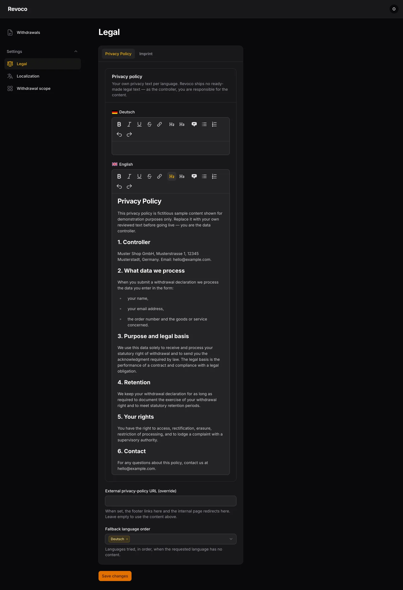
Both skills are conveniences, not requirements — everything they produce can be authored by hand, and every AI-generated draft is reviewed by the operator before it goes live.
Deployed in four steps
All you need is Docker and a reverse proxy. The official image is published to GHCR.
-
Generate an application key
Once, before first boot — the container refuses to start without it:
docker run --rm ghcr.io/chriras/revoco:latest \ php artisan key:generate --show -
Configure your environment
Copy the example file and set your key, URL, SMTP credentials and operator account:
cp .env.example .env # set APP_KEY, APP_URL, MAIL_*, OPERATOR_EMAIL, OPERATOR_PASSWORD, … -
Boot the stack
Migrations, cache warm-up and health checks are handled by the entrypoint:
docker compose -f docker-compose.yml up -d -
Create the operator account
Then sign in to the panel and complete the guided setup — legal pages, languages, scope:
docker compose -f docker-compose.yml exec app \ php artisan app:operator --email=you@example.com --password=…
Optional extras — ntfy push (--profile ntfy), a brand theme overlay, your existing legal pages — are one command or one panel visit away. Full instructions in the README.
Frequently asked questions
Who needs an electronic withdrawal form?
Since 19 June 2026, traders must offer an electronic withdrawal form whenever they let consumers conclude distance contracts through an online interface and a statutory right of withdrawal exists (§ 356a BGB) — in practice: most German-market B2C online shops. There was no transition period. Whether your specific business is covered is a question for your legal counsel.
Is Revoco legally compliant out of the box?
Revoco implements the statutory flow faithfully: only the three permitted mandatory fields, a never-blocked submission, an ad-free acknowledgment e-mail with date and time, and immutable storage as proof of receipt. What remains on your side: placing the withdrawal button in your shop, and providing your imprint and privacy policy. Revoco is software, not legal advice.
What does it cost?
Nothing — Revoco is free and open-source under the AGPL-3.0 license. You pay only for your own hosting, which can be as small as the cheapest VPS you can find: the whole stack is a handful of lightweight containers built from a single image, plus a SQLite file.
Where does the data live? What about the GDPR?
Everything stays on your server: withdrawal declarations are stored in a SQLite file on your volume, e-mails go out through your own SMTP server. There is no SaaS backend and no third-party processor — you operate the software yourself and remain the data controller.
Does it integrate with my shop system?
No integration is needed — and that is deliberate. Revoco runs in free-text mode: the consumer identifies the contract themselves (order number or a description of the goods), and you review incoming declarations in the panel. It works next to any shop system; the only touchpoint is a link from your shop's withdrawal button to the form.
Can the form match my shop's design?
Yes. The whole appearance hangs off one CSS token contract (--wf-*): a deploy-time theme overlay restyles colours, typography and controls, while logo and brand name come from the environment. The design-adoption skill can generate the overlay from your shop's URL automatically.
I run several shops — can one instance serve them all?
One deployment serves one merchant — that is a deliberate design decision that keeps the software simple and auditable. For several shops or brands you run several containers, each with its own configuration, theme and data.
What is under the hood?
A boring, dependable stack: PHP/Laravel, SQLite, a Filament operator panel, and a database-backed queue for asynchronous mail and push. It ships as a multi-stage Docker build — the production image contains no dev dependencies — with CI-built images on GHCR.
From stopgap to done right — in an afternoon
Self-hosted, open-source, deployed in an afternoon — whether you are replacing an interim fix or setting up withdrawal handling for your next shop.